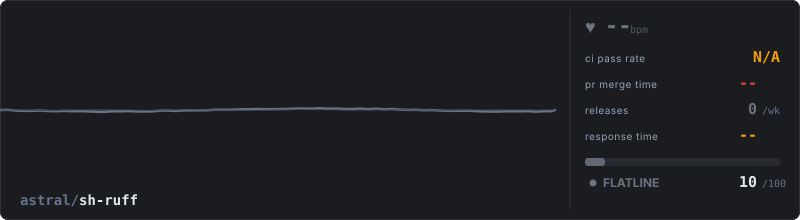
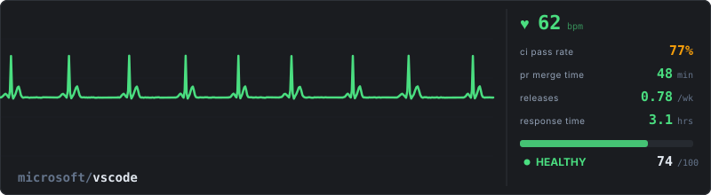
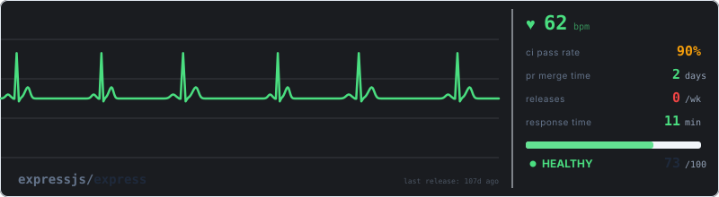

Your repository's vital signs as a living ECG. Waveform shape, rhythm, and speed driven by real metrics from the GitHub API.



Low CI causes arrhythmia and irregular beat intervals. Below 35% the P-wave disappears entirely (atrial fibrillation). Below 30% the ST segment elevates.
Slow merges elevate the T-wave (cardiac stress signal). Above 7 days the T-wave inverts, indicating extreme stress on the development process.
Frequent releases = faster heartbeat. No releases = slow bradycardic rhythm. The TP segment between beats compresses as rate increases.
Slow issue response adds noise and low-frequency drift to the baseline between beats. Fast response keeps the line clean and stable.
code repositories analyzed (non-code repos excluded)
Scoring is population-based, not arbitrary. Each metric is a percentile rank within your repo's size cohort.
Pick the one that fits your workflow. All use the same scoring engine.